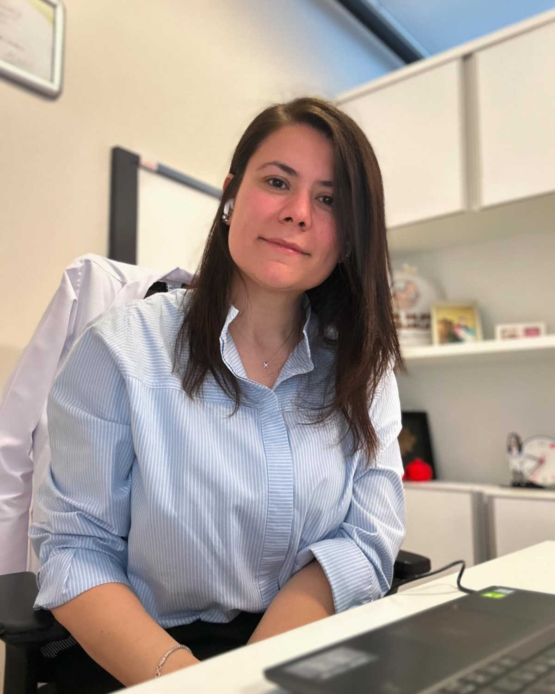
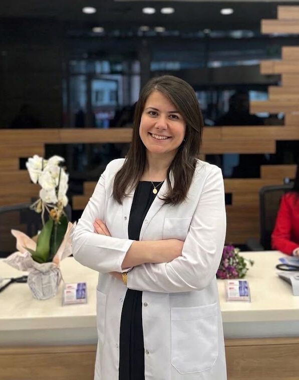

Doç. Dr.
DilşadHerkiloğlu
Tüp bebek (ÜYTE), kadın hastalıkları ve doğum. Anne olma yolculuğunda bilimsel, güncel ve kişiye özel bir yaklaşım.


Klinik deneyim ve bilimsel bakış, bir arada.
Doç. Dr. Emine Dilşad Herkiloğlu, Çukurova Üniversitesi Tıp Fakültesi'nden mezun oldu; Kadın Hastalıkları ve Doğum uzmanlık eğitimini SBÜ Zeynep Kamil Kadın Doğum ve Çocuk Hastalıkları Eğitim ve Araştırma Hastanesi'nde tamamladı.
İstanbul Üniversitesi'nde Moleküler Biyoloji ve Genetik doktorasını, Hacettepe Üniversitesi'nde ÜYTE Klinik ve Laboratuvar Uygulamaları sertifikalı eğitimini tamamladı. 2023'te doçent unvanını aldı. Gebelik takibinden doğuma, jinekolojik muayeneden üremeye yardımcı tedavilere kadar her aşamada kişiye özel ve güvenli bir süreç hedefliyor.
Adım adım, size özel.
Tüp bebek, yumurta ve spermin vücut dışında bir araya getirilerek oluşan embriyonun anne rahmine yerleştirilmesi esasına dayanır. Her aşama çiftin durumuna göre planlanır ve yakından takip edilir.
İlk görüşme ve değerlendirme
Tıbbi geçmişiniz, varsa önceki tetkik sonuçlarınız ve beklentileriniz birlikte değerlendirilir.
Tetkik ve testler
Hormon testleri, ultrasonografik değerlendirme ve gerekiyorsa eş için semen analizi yapılır.
Kişiye özel protokol
Değerlendirme sonuçlarına göre size uygun tedavi protokolü planlanır.
Yumurtlama takibi ve toplama
Over yanıtı ultrason ve kan tahlilleriyle yakından izlenir; uygun zamanda yumurta toplama işlemi yapılır.
Laboratuvar süreci
Yumurta ve sperm bir araya getirilir; embriyo gelişimi laboratuvar ortamında izlenir.
Embriyo transferi ve takip
Uygun embriyo rahme yerleştirilir; süreç sonrasında yakın takip sürdürülür.
Kadın sağlığının her aşamasında
Tedavi kararı muayene ve tetkikler sonrasında, kişiye özel olarak verilir.
Adana'dan Londra'ya, bir uzmanlık yolu.
Eğitim ve deneyim duraklarına göz atın; kaydırdıkça yol ilerliyor.
- 2006–2012Eğitim
Çukurova Üniversitesi Tıp Fakültesi
Tıp eğitimi · Adana
- 2012Deneyim
Bitlis Halk Sağlığı Merkezi
Pratisyen hekim
- 2013–2017Uzmanlık
SBÜ Zeynep Kamil Kadın Doğum ve Çocuk Hastalıkları EAH
Kadın Hastalıkları ve Doğum uzmanlık eğitimi. Tez: kısa serviks ve servikal yetmezlikte pesser kullanımı.
- 2016Gözlemci
Harris Birthright Research Centre for Fetal Medicine
King's College Hospital · Londra
- 2016–2023Doktora
İstanbul Üniversitesi
Moleküler Biyoloji ve Genetik
- 2017–2018Deneyim
Siirt Kurtalan Devlet Hastanesi
Kadın Hastalıkları ve Doğum Uzmanı
- 2020–2023Akademi
Yeni Yüzyıl Üniversitesi Tıp Fakültesi
Özel Gaziosmanpaşa Hastanesi · Doktor Öğretim Üyesi; 2023'te Doçent
- 2022Sertifika
Hacettepe Üniversitesi Tıp Fakültesi Hastanesi
ÜYTE Klinik ve Laboratuvar Uygulamaları (tüp bebek sertifika eğitimi)
- 2024–2026Deneyim
Medicalpark Bahçelievler Hastanesi
Kadın Hastalıkları, Doğum ve Tüp Bebek · Doçent Doktor
- 2026Bugün
Center IVF
Kadın Hastalıkları, Doğum ve Tüp Bebek · Doçent Doktor
Yayınlar ve bildiriler
Üreme tıbbı, gebelik, jinekolojik onkoloji ve moleküler biyoloji alanlarında ulusal ve uluslararası çalışmalar. Arayın, türe göre süzün.
Sertifikalar
- ÜYTE Klinik ve Laboratuvar Uygulamaları · Hacettepe, 2022
- ASRM 2022 Scientific Congress & Expo · Anaheim
- Fetal Anomaly Screening Ultrasound Course · 2014
- Fetal Heart Ultrasound Course · 2014
- Gynecological Microsurgery Course · 2014
- Laparoscopy Course in Gynaecology · 2014
- Mice Embryo Manipulation · TÜBİTAK MAM, 2015
- Sexual Therapy Education · CISED, 2016
- Postpartum Hemorrhage (Cadaver Course) · 2016
- Urogynecological Anatomy and Operations · 2016
Ödüller
- Sözel Bildiri İkincilik Ödülü · Üreme Sağlığı ve İnfertilite Derneği, 2021
- Siirt Valiliği Başarı Belgesi · 2018
Kitap
- Güncel Obstetrik Yaklaşımlar (2020) · editör ve bölüm yazarı
Üyelikler
- Türk Jinekoloji ve Obstetrik Derneği
- Türkiye Klinikleri, Tıp Bilimleri Dergisi
Diller
- Türkçe (anadil)
- İngilizce (akıcı)
Fulya Terrace Center'da randevunuzu alın.
Sitedeki içerikler bilgilendirme amaçlıdır. Tanı ve tedavi için lütfen randevu alınız.